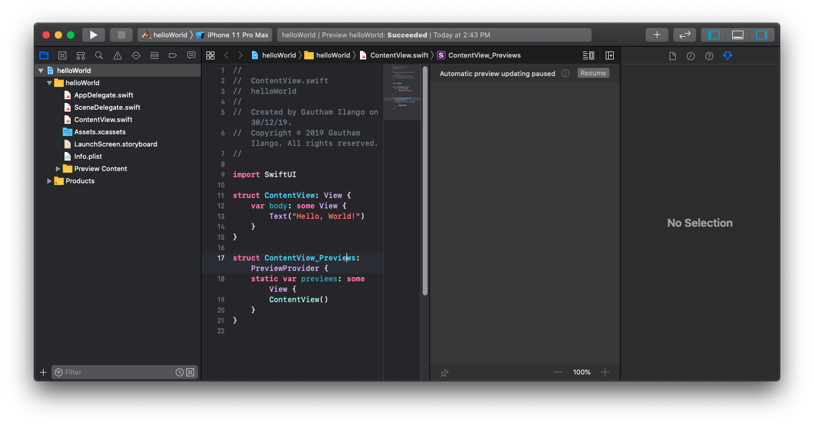

Hello world, SwiftUI?
SwiftUI is the hot new tech from Apple. And I’m going to share my experiences creating a Hello Word project in the brand new SwiftUI user interface. And I should tell you, I’m excited to learn a new piece of tech in the Apple realm. Aren’t you?
What is SwiftUI?
I started reading about SwiftUI in SwiftUI’s official page at Apple’s website. In short and according to Apple, SwiftUI is the modern way to declare user interfaces in any Apple platform. SwiftUI lets you declare the UI in Swift and preview it in realtime. SwiftUI not only makes the UI implementation easier but also makes it faster, since we can avoid build times while using StoryBoard.
Hello, World
Let’s start by creating a new project in Xcode.
Open Xcode(Version 11 or later required) and select create a new Xcode project.
 Then choose the template as Single View App and click Next
Then choose the template as Single View App and click Next
 And then fill in the details for the new project and make sure you’ve selected
And then fill in the details for the new project and make sure you’ve selected SwiftUI for the User Interface. And click Next.
And then choose your preferred directory and click on Create to create your new Project. Once you’ve created your project you will be presented with a screen like this.

From my many years of experience in the iOS app development, UI wise the first thing that comes to my attention is that Xcode’s new Assistant editor. Now it makes total sense why Apple have made changes there, it really works well with the new SwiftUI.
On the right you can see the preview of the UI you’re working on and on the left you can easily edit the code. Click on Resume to see the preview working.
 Once you’ve clicked
Once you’ve clicked Resume you’ll see the preview of the UI in the canvas and it says “Hello, World”, Voila!
And the code in the editor looks like this.
import SwiftUI
struct ContentView: View {
var body: some View {
Text("Hello, World!")
}
}
struct ContentView_Previews: PreviewProvider {
static var previews: some View {
ContentView()
}
}We are seeing three things here, an import statement and two structs. The import statement imports the brand new SwiftUI framework and the two structs declares the UI.
The first struct - ContentView conforms to the protocol View. And as required by the protocol the ContentView struct has implemented a body variable of type some View. The body variable is a getter and has a Text object initialized with String “Hello, World”. And you must have noticed the keyword some in it and it’s not a mistake. The new keyword some is at the epicentre of the new feature Opaque Types. And Opaque types are introduced and supported only in Swift 5.1.
How to make Opaque Types?
In order to understand Opaque type you must need a clear understanding of how Generic and Protocol types work. In earlier Swift Versions (version < 5.1) many must have faced this issue. We will be required to define a concrete type whenever we return a protocol type that has an associated type. This is because Swift compiler won’t be able to compare or understand the underlying types of the Protocol types with the associated type. On the other hand the Opaque type will let the compiler understand and compare the type. Opaque type gives us the guarantee that the underlying type conforms to a particular protocol. You should use some keyword before your normal type to make a type opaque, for example as we saw in the code above var body: some View. I believe opaque types makes the SwiftUI possible, since an object of View can contain any kind of View object of type which conforms to View protocol. If the above doesn’t make any sense and to read more in detail about Opaque Type visit the official Swift page
Apart from the ContentView struct there is a second struct ContentView_Previews which conforms to PreviewProvider. The PreviewProvider protocol requires a body object as well, which will be rendered in the preview.
And there is also a new Delegate to support SwiftUI. It’s called SceneDelegate.swift, and you can find it in the navigator. It contains the boiler plate code that lets you manage your UI in different scenarios. We will discuss more about SwiftUI in the future.